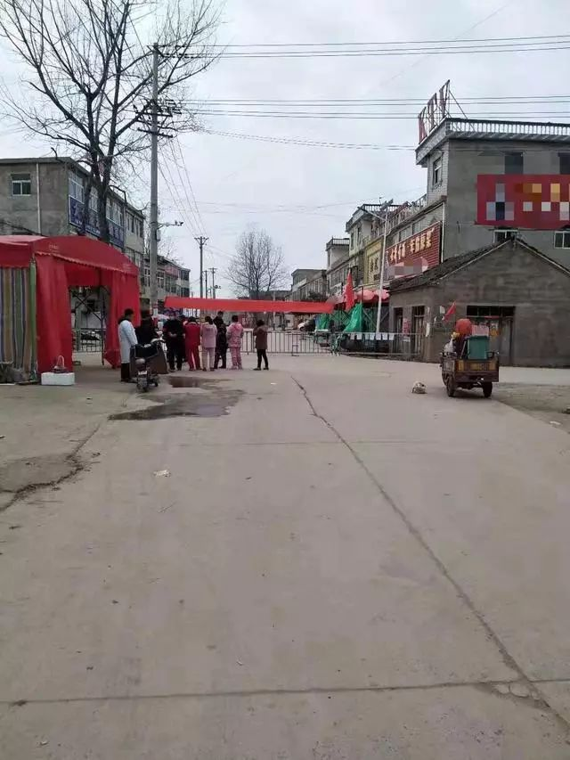
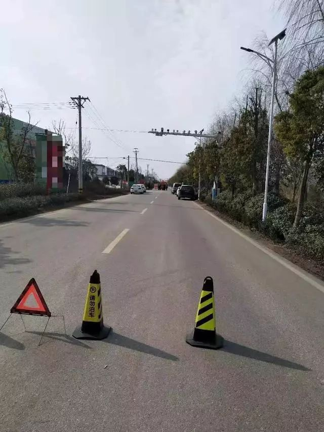
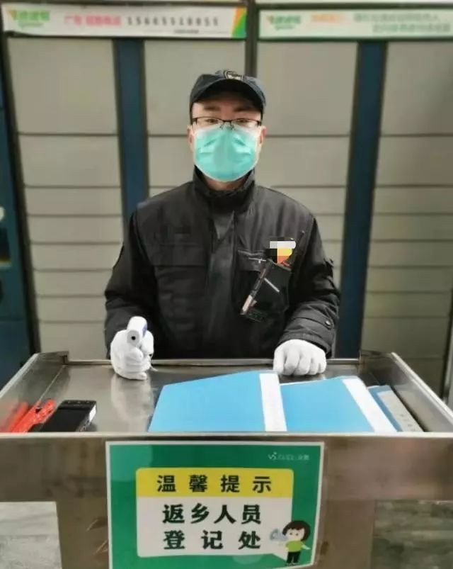

直到离开家时，我才真切感受到了恐惧丨人间
原文链接 备份链接 1830年秋天，为了筹备婚礼同时处理伯父的丧事，普希金去了父亲的庄园波尔金诺村。 他原打算在那里待3个星期，没想到赶上当地闹瘟疫，交通封锁。于是，他在村里一住就是3个月，无事可做的他投身创作，完成了27首抒情诗、6部 …

出村很困难，我决定步行
口述/小李（物业保安班长）
大年三十我最爱的姥姥去世了，要当天下葬。
我匆匆请了假，从合肥坐高铁到老家，送姥姥一程。
新闻我看得不多，不太清楚安徽到底多严重。但是公司对我们的要求一天比一天严格，每个人都能感到疫情确实很厉害。
比如我们有个责任制度，平常一年也出不了几个，现在发现员工不戴口罩，直接就是质量事故，要处罚通报。比如现在要求非业主不能进出，等等。
年初二我就想赶紧回来上班，特殊时期兄弟们人手紧缺，我不能掉队。可是，到处都封了。
我花了一个星期，天天去探路，发现封路的情况越来越严重。
初九，我决定走回去。
01
大年三十回到家的时候，姥姥已经草草埋了
家里人拦住我不让去坟头，说不能聚集，我哭了好几场。
初二我准备回合肥。请假时经理就让我快去快回，再一看工作群里，每天我们的工作量都在加，防疫任务重，大家进入了战备状态。
我负责的部分都是兄弟们在承担，累坏他们了。
初二吃完午饭，我爸踩三轮车送我去市集，我在公交站等了两个小时，想坐班车去市里乘高铁。结果大家说，今天没车了，明天下午两点前有车。
初三吃了早饭就去了，在外面搓手跺脚从九点半等到快十二点。

我看到了司机在买面条，他说走不掉了，路被封了。我不信，我回去开摩托车试，结果街上到处都是警灯在闪，不准开。
初四我又去打听。我弟踩着三轮车带着我到市集，一个超市老板说再踩半个小时到另外一个集镇去，那里还有班车。我们又去那里了，到了发现，路也封了，班车没有了。
初五我爸不准我再出去了，说家里规矩是三六九往外走，其他时候不能走。我就去地里打除草剂，这几天我快把十来亩地的除草剂都打完了。
初六看着兄弟们忙碌的信息，我心急如焚，因为我忽然不在，让他们变得更忙。
年前，我跟兄弟们说了，大家都别抢着回家，过年了都想回家，我们一个个换着回，我保证回来一个走一个，我可以最后正月十五再回去过个元宵……我食言了。
我爸骂我，别回了，老实在家待着，反正你就那么点工资，也没见你赚钱回来。
初八，我让妹夫开车来送我，他还没出村就被劝返了。

我决定走路到高铁站
晚上我有了个主意，我跟兄弟们说：“我走回来，等着。”他们都以为我开玩笑。
初九大早，我爸去市集，家里的粮油店要开门。爸说电动车也都不让走了，我让我弟骑摩托车最后再试试，还没到市集就被拦下。
已经9点了，我不能再拖，趁爸不在家，我要走了。
02

天气还好，我拿上8个口罩，戴好手套、眼镜，兜里有手机和充电宝，出发。我想走到高铁站，距离我家50多公里。
我们当保安的，有的是脚力，平时也经常一走3万多步。
我先走到10来公里外的集镇，再打开手机导航。
长这么大，第一次这么空的路，也第一次看到这么多条路都封了，简直是三步一岗，两步一卡。我见识到了各种路卡，有的是人力阻挡，有的直接是物理型的路障，超级长一辆货车把路挡着、土堆着，还有的两者都有。

路都被封起来了
卡口处，人走路都不让走了。
我跟把守的解释，我是保安，战友都在前线，人手不够我要赶回去，劳烦放行。
我掏出身份证、工作牌，给他们递烟、拱手。我说，你看我都走了这么远了，你们放心，我一路上都跟人保持距离，而且我绝对不回头不让你们为难。
实在不放行的村庄，我就绕行，咱一双脚，怎么样都能走。我已经决定了，我是不会回头的。

到处都是路障
走了一会儿肚子就有些饿了，这几天早上都没吃多少。但是一路上都没有什么饭店，就算有，我也不敢去啊。
我到街边小店买了3瓶苏打水，累了就喝两口。我不敢停下来休息，这我有经验，走路的时候不能想着休息。
傍晚5点，到了高铁站。
走这50公里，我花了8个小时。
谢天谢地，高铁没封。我赶紧买了半小时后出发的票。
兄弟们，我来了！

我回到了工作岗位上
下了高铁，我直奔我所在的门岗，晚上七点二十分。
兄弟们很激动，给我全身上下喷了酒精，我说我来上班的，他们让我先去吃点东西，缓一缓，明天再上岗。
我买了份盒饭，吃了一半，另一半早上热了吃。
现在我每天上14个小时班，要保证门岗不出问题，保证小区秩序，业主纠纷有时候也要处理。我爸总说我只是个小保安，但是我不服，保安怎么了，只要好好干，终究是会得到社会的认可的。

记录平凡而普通
的人生


你“在看”我吗？点一下让我知道

原文链接 备份链接 1830年秋天，为了筹备婚礼同时处理伯父的丧事，普希金去了父亲的庄园波尔金诺村。 他原打算在那里待3个星期，没想到赶上当地闹瘟疫，交通封锁。于是，他在村里一住就是3个月，无事可做的他投身创作，完成了27首抒情诗、6部 …
原文链接 备份链接 - 疫 情 之 下 - 过年那天晚上，一家人气氛十分怪异，一双儿女居然对我有点回避。往年都是一左一右挂在我身上，找我要红包，今年都刻意保持着距离。 ” 1 2020年1月10，春运正式开始拉开帷幕，由于大规模的人口迁 …
原文链接 备份链接 文 | 三明治016 车子缓缓驶近村口。 一根彩带揉搓成的细长绳子，挂在门口两个石狮子上，挡住了进村的路。 因为新型冠状病毒影响，正月初七这天，往年返京最高峰的日子，北京多个村庄、多个社区却相继曝出拒绝租客进门的规 …
原文链接 备份链接 从今天起，我们将围绕全国疫情进行为期两周的报道。 自 1 月 20 日新冠肺炎全面进入公共视野以来，编辑部除了密切留意疫情和它带来的人间悲喜剧外，也试图以我们擅长的角度，小切口地观察这场几乎洗刷了 2019 年国家基调 …
原文链接 备份链接 封城时间终于进入了两位数，医疗资源紧张的情况依然不见显著改善。 昨天「财经」发的稿子内容触目惊心，以武汉的一家定点医院为例，120个发热病人，大约平均会有80人被诊断为肺部感染，其中又只有5人能够「幸运」的被收治住院， …